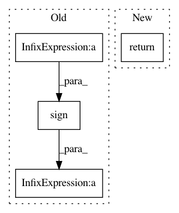

285c8d2190054b4929f5f2d343ff584293ff3f6d,tutorials/intermediate/imshow_extent.py,,generate_imshow_demo_grid,#Any#Any#,23
Before Change
(left, bottom),
**arrow_style)
ax.annotate("",
(left + 2*np.sign(right - left), bottom),
(left, bottom),
**arrow_style)
After Change
ax.annotate(text, **text_kwargs)
ax.axis("off")
return columns
extents = (None,
(-0.5, 6.5, -0.5, 5.5),
In pattern: SUPERPATTERN
Frequency: 3
Non-data size: 4
Instances
Project Name: matplotlib/matplotlib
Commit Name: 285c8d2190054b4929f5f2d343ff584293ff3f6d
Time: 2018-04-26
Author: 2836374+timhoffm@users.noreply.github.com
File Name: tutorials/intermediate/imshow_extent.py
Class Name:
Method Name: generate_imshow_demo_grid
Project Name: onnx/onnx-tensorflow
Commit Name: cb4872291e117abc28776492cbe0208aeefd2245
Time: 2019-06-07
Author: wtsang@us.ibm.com
File Name: onnx_tf/handlers/backend/thresholded_relu.py
Class Name: ThresholdedRelu
Method Name: version_1
Project Name: chainer/chainer
Commit Name: d02772a31ca01d562d7d0e481e7ec2831decab4b
Time: 2019-10-11
Author: kataoka@preferred.jp
File Name: chainer/gradient_check.py
Class Name: _CheckBackward
Method Name: _sample_unit_vector